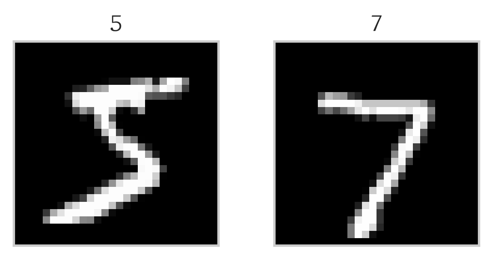

from torchvision import datasets, transforms
def load_mnist(root='./data', download=True, transform=transforms.ToTensor()):
return (
datasets.MNIST(root=root, train=True, download=download, transform=transform),
datasets.MNIST(root=root, train=False, download=download, transform=transform)
)
mnist_train, mnist_test = load_mnist()MNIST 숫자 분류
PyTorch에서 불러온 모델을 머신러닝에서 가장 유명한 MNIST 손글씨 숫자 데이터 세트의 숫자를 올바르게 분류하는 모델로 만들어 봅니다.
1. MNIST load
MNIST 손글씨 숫자 데이터 세트를 불러오는 방법에는 여러 가지가 있습니다. 간단한 방법으로는 Keras나 TensorFlow-datasets, Scikit-Learn을 통해 로드하는 방법 등이 있지만, 그래도 가장 쉬운건 역시 직접 다운로드하는 방법입니다.
여기선 가장 일반적인 방법은 아니지만 torchvision을 통해 데이터 세트를 다운로드하도록 하겠습니다. 참고로 해당 코드에서는 이 후 PyTorch 사용을 위해 데이터 세트는 다운로드와 동시에 텐서로 변환하겠습니다.
로드된 이미지는 다음과 같이 확인할 수 있습니다. 훈련 세트와 테스트 세트 각 첫 번째 이미지를 확인해 보겠습니다.
Code
import matplotlib.pyplot as plt
im_trn,lb_trn = mnist_train[0]
im_tst,lb_tst = mnist_test[0]
# 시각화를 위해 텐서를 28x28 numpy배열로 재변환
im_trn = im_trn.numpy().reshape(28, 28)
im_tst = im_tst.numpy().reshape(28, 28)
fig, axs = plt.subplots(1, 2, figsize=(4, 2))
axs[0].imshow(im_trn, cmap='gray')
axs[0].set_title(lb_trn)
axs[1].imshow(im_tst, cmap='gray')
axs[1].set_title(lb_tst)
for ax in axs:
ax.set_xticks([])
ax.set_yticks([])
plt.tight_layout()
plt.show()
2. 데이터 로더
훈련 세트와 검증 세트를 분리한 후, 훈련 시 데이터들을 불러오는 데이터 로더를 정의해 보겠습니다. 훈련 데이터 세트의 80%를 훈련 세트인 dls로, 나머지를 하나의 에포크가 끝난 후 평가하는 val_dls로 분리합니다. 테스트 데이터 세트는 모델의 마지막 평가를 위해 남겨둡니다. 모두 PyTorch의 모듈을 이용합니다.
참고로 배치 사이즈는 2의 지수 형태가 일반적이라고 하네요.
from torch.utils.data import DataLoader, random_split
batch_size = 128
train_size = int(0.8 * len(mnist_train))
val_size = len(mnist_train) - train_size
train_dataset, val_dataset = random_split(mnist_train, [train_size, val_size])
dls = DataLoader(dataset=train_dataset,
batch_size=batch_size,
shuffle=True,
drop_last=True)
val_dls = DataLoader(dataset=val_dataset,
batch_size=batch_size,
shuffle=True,
drop_last=True)
tst_dls = DataLoader(dataset=mnist_test,
batch_size=batch_size,
shuffle=False)3. 모델 정의
다음은 torchvision의 models 모듈을 통해 모델(‘ResNet-18’)을 정의합니다. 주의할 점은 MNIST 이미지는 흑백(grayscale) 이미지이기 때문에 이미지 입력 레이어의 채널이 3(RGB)이 아닌 1이 되어야 한다는 것입니다. 또한 이 모델은 분류 모델이므로 출력의 종류를 정의하는 선형 레이어를 추가해야합니다.
- Original: Conv2d(3, 64, kernel_size=(7, 7), stride=(2, 2), padding=(3, 3), bias=False)
- After: Conv2d(1, 64, kernel_size=(7, 7), stride=(2, 2), padding=(3, 3), bias=False)
미세 조정(Fine-tuning)을 하고 싶다면 모델을 불러오는 과정에서 pretrained 인자를 True로 하고 이미 학습된 모델의 가중치와 편향 등의 매개변수(parameter)를 고정할 수 있게 모델 매개변수의 requires_grad를 False로 바꿔주면 되니 참고하시기 바랍니다.
import torch
from torchvision import models
n_classes = 10
model = models.resnet18(pretrained=False)
# 미세 조정 시 모델의 매개변수를 고정(freeze)
# for param in model.parameters():
# param.requires_grad = False
# 모델의 첫 번째 계층을 수정
model.conv1 = torch.nn.Conv2d(1, 64, kernel_size=(7, 7), stride=(2, 2), padding=(3, 3), bias=False)
# 출력 계층 수정
model.fc = torch.nn.Linear(model.fc.in_features, n_classes)4. 손실 함수와 최적화 함수, CUDA
손실 함수와 최적화 함수를 정의합니다. 손실 함수는 분류 모델에 쓰이는 Cross Entropy Loss를 사용하고, 최적화 함수엔 Adam을 사용합니다. 스케줄러를 통해 최적화 함수의 속도를 조절합니다. 5 에포크마다 학습률에 감마(0.1)값을 곱합니다.
criterion = torch.nn.CrossEntropyLoss()
optim = torch.optim.Adam(model.parameters(), lr=0.001)
n_epochs = 15
scheduler = torch.optim.lr_scheduler.StepLR(optim, step_size=5, gamma=0.1)GPU 설정을 위해 device 변수를 정의합니다. Nvidia GPU를 사용할 수 있는 환경이라면 ’cuda’를, 그 외에는 ’cpu’를 사용합니다. GPU에서 훈련시키기 위해서는 훈련에 필요한 모든 변수를 GPU로 이동시켜야 합니다. 이를 위해 .to(device)를 사용해 모델을 옮깁니다. 아래 훈련 부분에서도 반복하여 사용됩니다.
device = 'cuda' if torch.cuda.is_available() else 'cpu'
model = model.to(device)5. 훈련
훈련 루프를 작성합니다. train 모드와 eval 모드로 나누어 한 에포크의 훈련이 끝날 때 마다 검증 세트로 성능을 평가합니다. 설정한 에포크 수 만큼 훈련합니다.
성능 평가 시엔 손실도 같이 보는 경우도 많지만, 이를 확인하는 방법 또한 정확도 계산과 크게 차이가 없습니다. 손실을 구하는 방법은 주석으로 달아놨으니 참고하시면 되겠습니다.
for epoch in range(n_epochs):
model.train() # 모델 훈련
# loss_epoch = 0. -> 손실 계산
for inputs, labels in dls:
inputs = inputs.to(device)
labels = labels.to(device)
optim.zero_grad()
outputs = model(inputs)
loss = criterion(outputs, labels)
loss.backward()
optim.step()
# loss_epoch += loss.item()
# avg_loss = loss_epoch / len(dls) -> 에포크 당 평균 손실
model.eval() # 모델 평가
with torch.no_grad():
total = 0
correct = 0
for inputs, labels in val_dls:
inputs = inputs.to(device)
labels = labels.to(device)
outputs = model(inputs)
_, predicted = torch.max(outputs, 1)
total += labels.size(0)
correct += (predicted == labels).sum().item()
print(f'Epoch: {epoch}, Accuracy on validation set: {100. * correct / total:.2f}')Epoch: 0, Accuracy on validation set: 96 %
Epoch: 1, Accuracy on validation set: 97 %
Epoch: 2, Accuracy on validation set: 98 %
Epoch: 3, Accuracy on validation set: 98 %
Epoch: 4, Accuracy on validation set: 97 %
Epoch: 5, Accuracy on validation set: 98 %
Epoch: 6, Accuracy on validation set: 98 %
Epoch: 7, Accuracy on validation set: 98 %
Epoch: 8, Accuracy on validation set: 98 %
Epoch: 9, Accuracy on validation set: 98 %
Epoch: 10, Accuracy on validation set: 98 %
Epoch: 11, Accuracy on validation set: 98 %KeyboardInterrupt: 정확도를 확인하며 적당한 시점에 훈련을 멈추는 것도 괜찮습니다.
6. 결과
model.eval()
total_correct = 0
total_samples = 0
with torch.no_grad():
for inputs, labels in tst_dls:
inputs = inputs.to(device)
labels = labels.to(device)
outputs = model(inputs)
_, predicted = torch.max(outputs, 1)
total_samples += labels.size(0)
total_correct += (predicted == labels).sum().item()
accuracy = 100. * total_correct / total_samples
print(f'Accuracy on test set: {accuracy}%')Accuracy on test set: 99.13%테스트 세트 기준, 이 모델은 99% 정도의 정확도로 MNIST 데이터 셋을 올바르게 분류할 수 있는 것을 확인할 수 있었습니다.
이렇게 비교적 간단한 방법으로 MNIST 손글씨 숫자 데이터 셋을 분류하는 모델을 만들어 봤습니다. ResNet과 같은 모델을 사용하면 시간을 크게 들이지 않고 정확도가 높은 모델을 만들어 낼 수 있습니다.
다음 시간에도 엔지니어링 관점에서 머신러닝을 잘 활용할 수 있는 포스트로 만나뵙겠습니다.
Ciao!